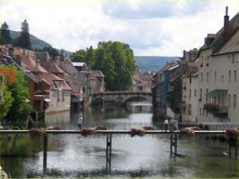

Bienvenue
 Et prima post Osdroenam quam, ut dictum est, ab hac descriptione discrevimus, Commagena, nunc Euphratensis, clementer adsurgit, Hierapoli, vetere Nino et Samosata civitatibus amplis inlustris. Unde Rufinus ea tempestate praefectus praetorio ad discrimen trusus est ultimum. ire enim ipse compellebatur ad militem, quem exagitabat inopia simul et feritas, et alioqui coalito more in ordinarias dignitates asperum semper et saevum, ut satisfaceret atque monstraret, quam ob causam annonae convectio sit impedita. Latius iam disseminata licentia onerosus bonis omnibus Caesar nullum post haec adhibens modum orientis latera cuncta vexabat nec honoratis parcens nec urbium primatibus nec plebeiis. Quam ob rem circumspecta cautela observatum est deinceps et cum edita montium petere coeperint grassatores, loci iniquitati milites cedunt. ubi autem in planitie potuerint reperiri, quod contingit adsidue, nec exsertare lacertos nec crispare permissi tela, quae vehunt bina vel terna, pecudum ritu inertium trucidantur. Montius nos tumore inusitato quodam et novo ut rebellis et maiestati recalcitrantes Augustae per haec quae strepit incusat iratus nimirum quod contumacem praefectum, quid rerum ordo postulat ignorare dissimulantem formidine tenus iusserim custodiri. Utque proeliorum periti rectores primo catervas densas opponunt et fortes, deinde leves armaturas, post iaculatores ultimasque subsidiales acies, si fors adegerit, iuvaturas, ita praepositis urbanae familiae suspensae digerentibus sollicite, quos insignes faciunt virgae dexteris aptatae velut tessera data castrensi iuxta vehiculi frontem omne textrinum incedit: huic atratum coquinae iungitur ministerium, dein totum promiscue servitium cum otiosis plebeiis de vicinitate coniunctis: postrema multitudo spadonum a senibus in pueros desinens, obluridi distortaque lineamentorum conpage deformes, ut quaqua incesserit quisquam cernens mutilorum hominum agmina detestetur memoriam Samiramidis reginae illius veteris, quae teneros mares castravit omnium prima velut vim iniectans naturae.